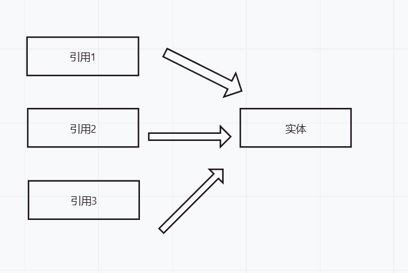
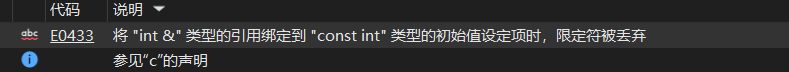
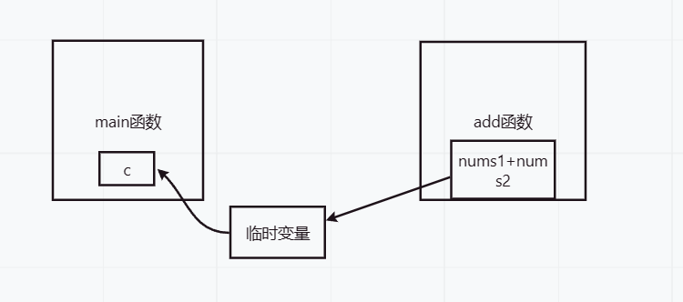
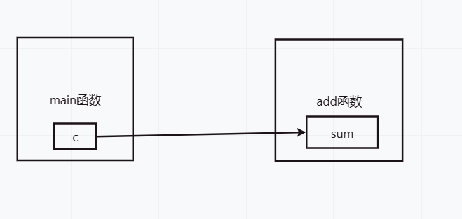
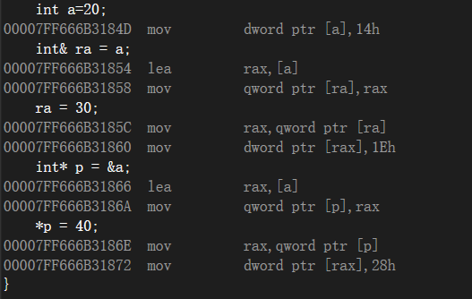

前言： 最近学到了c++中的引用，发现引用和c中所学到的指针有着很相似的效果，但在c++中仍然有着指针的一席之地，想必二者的适用场景是各有千秋，于是查阅资料，写了此文来方便日后复习。
引用是C++中的一种
数据类型，它是一种类似于指针的变量。引用可以被认为是一个变量的别名(比如你名字叫大明，外号叫小明，别人喊小明你肯定就知道是在叫你)，它提供了一种访问变量的方式，使得程序员可以通过不同的名称来操作同一个变量(喊大明小明都是在叫你)，从而简化了代码的编写。
引用的语法非常简单，可以通过在变量名前面加上“&”符号来定义一个引用。例如，如果我们定义了一个整型变量a，可以通过以下语句来定义一个引用b：
int a = 10;
int &b = a;
这样，变量b就成为了变量a的别名，它们指向同一个内存地址(这点非常重要)。因此，对变量b的操作也会影响到变量a。
初始化。一旦引用被初始化，它将一直指向该变量，并不能再被改变。函数参数传递。通过引用传递参数可以避免复制大量的数据，提高程序的效率。返回值。通过引用返回值可以避免复制大量的数据，提高程序的效率。人可以有多个外号，同样，一个变量也可以有多个引用。

int a=10;
int& b = a;
int& c = a;
cout << b << endl;
cout << c << endl;
c = 20;
cout << b << endl;
得到的结果是10 10 20。说明了改变b与c可以影响a，且b与c指向的是同一块内存空间。
但一个引用就只可以引用一个实体。如果出现了一个引用引用多个实体的情况，编译器是不会放行的。
引用在定义时就必须进行初始化，这是不同于指针的一点。
const int a=10;
int& b=a;
这样的例子是典型的错误。编译器给出了报错原因：

在这段代码中，常量a被定义为const int类型，它的值
不能被修改。同时，变量b被定义为int类型的引用，它指向了a的内存地址。由于a是一个常量，它的值不能被修改，因此对b的任何修改都会影响到a的值，这与const int类型的a所表示的语义不符。因此，编译器会报错，提示“invalid initialization of reference of type 'int&' from expression of type 'const int'”。
常引用在c++里通常被用作函数参数，函数返回值或者成员变量。
void print(const int& a) {
cout << a << endl;
}
传入的a是一个常引用，此时在函数里对a的任何修改都是非法的！
const string& getLonger(const string& str1, const string& str2) {
return str1.length() > str2.length() ? str1 : str2;
}
此函数的功能是返回较长的一个字符串，常引用作为返回值确保了字符串在返回时不会被修改。此外，在作类成员变量，或者遍历容器时也会有常引用的身影。
即当既要使用引用提高程序的效率(下面讲)，又不能在函数内部修改实参的值时，可使用常引用。
void add(int& nums1, int& nums2) {
cout << nums1 + nums2 << endl;
}
上面就是一个引用做参数的典型例子，其不仅在写法上更简洁，效率也是更高的。
拷贝传值方式时，函数会将参数的值复制一份给形参，如果参数较大，则会消耗较多的时间和空间。而使用引用做参数时，函数只需要传入参数的地址，不需要复制数据，因此可以减少数据的拷贝，提高程序的效率。分配内存空间，当调用次数较多时，会占用较多的内存空间。而使用引用做参数时，只需要传递一个地址，不需要分配额外的内存空间，因此可以减少内存的占用，提高程序的效率。int add(int nums1,int nums2){
return nums1+nums2;
}
int main(){
int a=20;
int b=10;
int c=add(a,b);
}
这是一个传值返回的传统写法，在返回时会创建一个临时变量，哪怕函数的栈帧已经被销毁，main里面接受的值也是从临时变量得来的，所以这种传递方式是安全的。

但如果返回的是一个引用，那么情况就会出现变数了。
int& add(int& nums1, int& nums2) {
int sum = nums1 + nums2;
return sum;
}
此时int c=add(a, b)中的c是不确定的，可能得到正确的答案，那是因为add函数栈帧还没清理，如果栈帧被清理，得到的就是个随机值了。
同样的，如果将接受的变量换做一个引用，会变得更加的不可控。
int& c=add(a, b);
cout << c << endl;
printf("aaa\n");
cout << c << endl;
我的编译器给出的结果：
30
aaa
-858993460
可见在随意的调用另一个函数后，c的值发生了变化。

此时，c是指向sum的，当add函数调用完成后栈帧就被销毁，但此时我的编译器仍然没有清理它，销毁意味着系统将add所用的栈帧空间回收，但回收并不意味着数据也随之抹去，比如你今天在A201上课，放学后你离开了A201，意味着你将教室归还，当你朋友第二天来A201上课时，教室是存在的,只是使用者被换了。
所以这里当add调用完成后，空间还给了操作系统，操作系统又把这块空间给了printf函数来使用，自然第二次输出c就会是乱码了。因为c始终都指向这个位置，但谁来用这个位置是不确定的。
那么可以做如下的总结：
引用传参都是可以的。引用返回是需要谨慎使用的。一不留神就使用到了错误的空间。未归还给系统，则可以使用引用返回，但如果已经将其归还给了系统，那么最好用传值返回。看到这里，你会发现指针似乎和引用没有很大的区别，确实，就我现阶段的学习来看，二者的差别并不是很大。
以下是我总结的一些差别和相同的地方。
区别：
重新赋值，而引用不行。(引用在初始化后不能改变所指向的对象)空，而引用不行。指向空地址，而引用必须指向已存在的对象。定义时初始化，而指针可以在任何时候进行初始化。多级的说法，但引用没有。解引用才可以访问存储的地址，引用不用。指针和引用都可以提高程序的运行效率，因为它们避免了不必要的变量拷贝。
指针和引用都是C++中的两种重要的数据类型，它们在某些方面有相同之处，但也有很多区别。在使用时，需要根据具体的情况来选择使用哪种类型。例如，如果需要动态分配内存或者需要进行指针运算，则必须使用指针；而如果不需要修改变量的值，则可以使用引用，避免了指针的复杂性。
还有一点很有意思，在语法的概念上，引用就是取一个别名，是没有独立的空间的。但在其底层实现上实际是存在空间的，这是因为引用是按照指针的形式来实现的。这一点可以在反汇编代码进行查证。

可以看到反汇编代码几乎是一致的。但要深究其原理就等到以后再填坑啦。